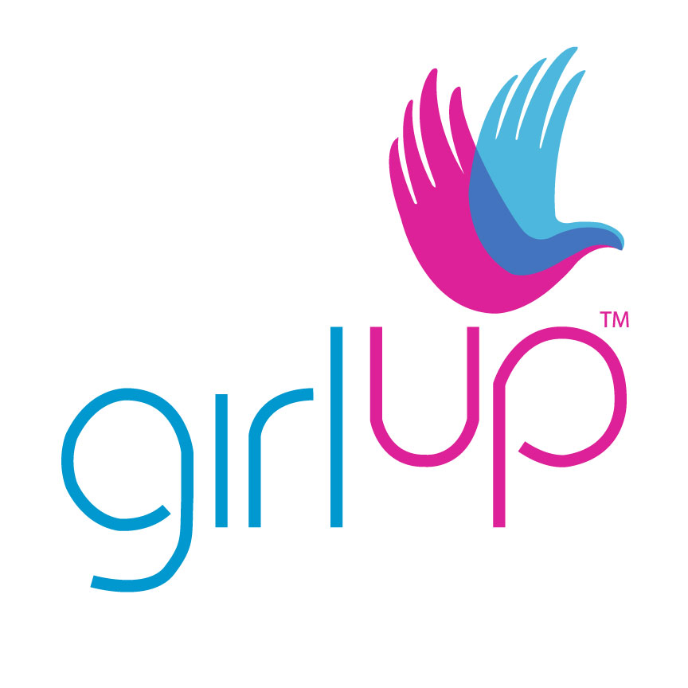

Lynn B
While volunteering for the LDFAC club, I had conducted many sewing sessions with my community to donate our creations. Our group had also hosted many fundraisers across the county to raise funds for the infrastructure of educational institutions in need.
I am currently a member of the Maryland Filmmaker's Club. This year, I had applied and was selected to work as a scriptwriter for two films that will be submitted to the Maryland Film Festival. These films are year long projects and will be mainly screened off campus. Both films will have a duration of 20 minutes, are of a drama genre and share an emphasis on cinematic visuals. Our main goal for both films is to earn the award for "Best Picture" in 2020.
I joined a Nations Foundation's Summer Program in 2018 in which I completed a series of STEM workshops and was sent with a group of selected female students to introduce our speech advocating for women's education rights to members of the U.S legislative board in Capitol Hill, D.C. I also attended a meeting with Former First Lady Michelle Obama who spoke about the importance of women's education worldwide.
Last summer, a team and I had raised funds to travel to Monteverde, Costa Rica in order to complete a long-term volunteering project. Our main focus was helping in construction and renovation for a women's rehabilitation and education center in the mountains. I had also helped install pipes for clean access to water in both the laundry and bathrooms in the living quarters, as well as construct a storage room to insulate perishable food items.